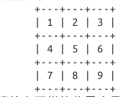

3 增加交互功能¶
3.2 给出提示的棋盘¶
这无非是把空白换成数字 1～9,棋盘每个位置都标上了序号，方便用户选择下棋的位置。修改下 cout 的输出语句即可：
string boundary = "+---+---+---+";
string sidebar(6, ' '); //空白的左边栏
cout << "棋盘如下：" << endl;
cout << sidebar << boundary << endl;
cout << sidebar << "| " << 1 << " | " << 2 << " | " << 3 << " |" << endl;
cout << sidebar << boundary << endl;
cout << sidebar << "| " << 4 << " | " << 5 << " | " << 6 << " |" << endl;
cout << sidebar << boundary << endl;
cout << sidebar << "| " << 7 << " | " << 8 << " | " << 9 << " |" << endl;
cout << sidebar << boundary << endl;
3.3 用户下棋¶
定义存放用户棋子坐标的变量
int board_x, board_y, board_number; // 存放用户的棋子坐标
在上面第二步的时候，棋盘里给出了提示，棋盘每个位置都标上了序号，让用户选择。这里定义 board_number 存放用户选择的序号。接下来，把序号转换为棋盘位置的具体坐标，利用 switch 语句：
cout << "请输入下棋的位置序号（1～9）：";
cin >> board_number;
switch (board_number)
{
case 1 : board_x = 0, board_y = 0; break;
case 2 : board_x = 0, board_y = 1; break;
case 3 : board_x = 0, board_y = 2; break;
case 4 : board_x = 1, board_y = 0; break;
case 5 : board_x = 1, board_y = 1; break;
case 6 : board_x = 1, board_y = 2; break;
case 7 : board_x = 2, board_y = 0; break;
case 8 : board_x = 2, board_y = 1; break;
case 9 : board_x = 2, board_y = 2; break;
}
判断用户下棋的位置上是否已经存在棋子
while (mark[board_x][board_y] == " O " || mark[board_x][board_y] == " X " )
{
cout << "棋盘上已经存在棋子，请重新输入：" << endl;
cout << "请输入下棋的位置序号（1～9）：";
cin >> board_number;
switch (board_number)
{
case 1 : board_x = 0, board_y = 0; break;
case 2 : board_x = 0, board_y = 1; break;
case 3 : board_x = 0, board_y = 2; break;
case 4 : board_x = 1, board_y = 0; break;
case 5 : board_x = 1, board_y = 1; break;
case 6 : board_x = 1, board_y = 2; break;
case 7 : board_x = 2, board_y = 0; break;
case 8 : board_x = 2, board_y = 1; break;
case 9 : board_x = 2, board_y = 2; break;
}
}
mark[board_x][board_y] = " " + piece + " "; // 经过判断后，用户才下棋成功
3.4 重新实现计算机下棋¶
每一轮都是用户先手，计算机后手。如果前面四轮都没有决出胜负，最后一步就轮到用户。用户下完之后还没有赢，就是出现了平局，按照程序的逻辑，用户下完轮到计算机。计算机随机选择下棋位置的时候，都要先判断这个位置是否存在棋子，如果存在则继续随机选择，但是平局的时候，棋盘里都下满棋子了，这样计算机就是不停地循环随机选择下棋的位置。这时应该判断为平局，跳出循环，结束游戏。
for (int i = 0; i < 5; ++i)
{
int x, y; // 定义计算机下棋的坐标
x = random(3), y = random(3); // 随机用法请参见 2.1
while (mark[x][y] != " " && i < 4) // 判断是否棋盘是否已经存在这个棋子
{ // 如果进行到第五轮，最后一个棋子是用户下，
x = random(3); // 而不是计算机
y = random(3);
}
}
3.5 计数下了几轮¶
定义变量 step 作为计数器，显示下棋到了第几轮了。
int step; // 计算是第几步
for (int i = 0; i < 5; ++i)
{
step = i + 1;
}
3.6 判断输赢和平局¶
如何判断为平局。最多循环 5 轮，当第 4 轮之后，计算机就要跳出 判断是否存在棋子的循环 ，然后再来个判断，用户出现三种情况之一，赢、输或者是平局。
判断输赢分两种情况，棋子 O 赢了，赋值 true 给变量 win_o （初始值为 false ），同样地，棋子 X 赢了，赋值 true 给变量 win_x （初始值为 false ）
// 判断输赢
bool win_o = false, win_x = false;
接下来分别进行两次判断输赢，一次是判断用户，另一次是判断计算机
// 判断用户是否赢了
// 判断交叉线是否相等
if (mark[0][0] == " O " && mark [1][1] == " O " && mark[2][2] == " O " ) win_o = true;
if (mark[0][0] == " X " && mark [1][1] == " X " && mark[2][2] == " X " ) win_x = true;
if (mark[0][2] == " O " && mark [1][1] == " O " && mark[2][0] == " O " ) win_o = true;
if (mark[0][2] == " X " && mark [1][1] == " X " && mark[2][0] == " X " ) win_x = true;
// 判断横竖线是否相等
for (int c = 0; c < 3; ++c)
{
if (mark[c][0] == " O " && mark[c][1] == " O " && mark[c][2] == " O " )
win_o = true;
if (mark[c][0] == " X " && mark[c][1] == " X " && mark[c][2] == " X " )
win_x = true;
if (mark[0][c] == " O " && mark[1][c] == " O " && mark[2][c] == " O " )
win_o = true;
if (mark[0][c] == " X " && mark[1][c] == " X " && mark[2][c] == " X " )
win_x = true;
}
if (win_x != true && win_o != true) // 如果用户没有赢，才轮到计算机下棋
{
if (piece == "O") // 计算机选择的棋子要跟用户的不一样
mark[x][y] = " X ";
else
mark[x][y] = " O ";
}
// 判断计算机下棋时是否赢了
// 判断交叉线是否相等
if (mark[0][0] == " O " && mark [1][1] == " O " && mark[2][2] == " O " ) win_o = true;
if (mark[0][0] == " X " && mark [1][1] == " X " && mark[2][2] == " X " ) win_x = true;
if (mark[0][2] == " O " && mark [1][1] == " O " && mark[2][0] == " O " ) win_o = true;
if (mark[0][2] == " X " && mark [1][1] == " X " && mark[2][0] == " X " ) win_x = true;
// 判断横竖线是否相等
for (int c = 0; c < 3; ++c)
{
if (mark[c][0] == " O " && mark[c][1] == " O " && mark[c][2] == " O " )
win_o = true;
if (mark[c][0] == " X " && mark[c][1] == " X " && mark[c][2] == " X " )
win_x = true;
if (mark[0][c] == " O " && mark[1][c] == " O " && mark[2][c] == " O " )
win_o = true;
if (mark[0][c] == " X " && mark[1][c] == " X " && mark[2][c] == " X " )
win_x = true;
}
// 输出每一步下棋的棋盘状态
string bar[3] ; // 定义间隔的竖线
for (int k = 0; k < 3; ++k)
{
bar[k] = '|' + mark[k][0] + '|' + mark[k][1] + '|' + mark[k][2] + '|' ;
}
cout << endl;
cout << split_line << boundary << endl;
cout << " 第 " << bar[0] << endl;
cout << sidebar << boundary << endl;
cout << " " << step << " " << bar[1] << endl;
cout << sidebar << boundary << endl;
cout << " 轮 " << bar[2] << endl;
cout << split_line << boundary << endl;
cout << endl;
if (win_o || win_x) // 当满足棋子 O 或者 X 赢了的时候
{ // 再判断是用户赢了还是计算机赢了
if ( (win_o && piece == "O") || (win_x && piece == "X") )
cout << " 你赢了 ^_^ \n" << endl;
else
cout << " 你输了 >_< \n" << endl;
break; // 跳出循环，结束游戏
}
if (i == 4) // 判断是否平局
{
cout << " 平局 －_－# \n" << endl;
break; // 跳出循环，结束游戏
}